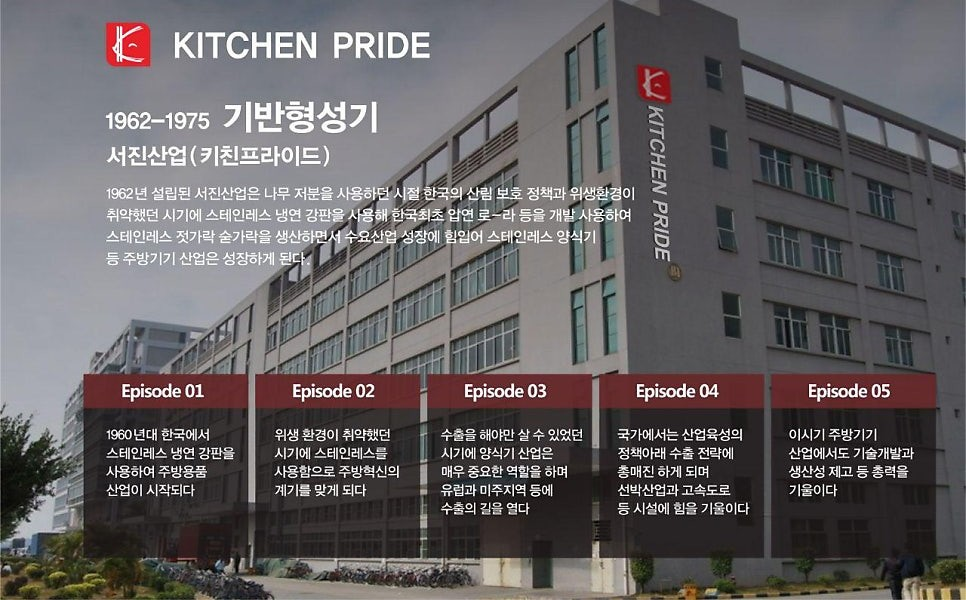

서진산업 설립, 주방용품 생산의 시작
Our story · Since 1962
좋은 주방을 향한 키친프라이드의 발자취
작은 시작에서 쌓아온 기술과 현장의 경험. 시대의 변화에 맞춰 더 나은 주방을 고민해 온 키친프라이드의 이야기를 소개합니다.

BUILT THROUGH EVERY ERA
주방의 내일을 함께 만들어온 시간
Milestones
시대마다 이어온
도전과 성장
시기를 선택해 주요 발자취를 살펴보세요.
키보드 방향키로도 이동할 수 있습니다.
01
기반형성기
서진산업 (키친프라이드)
1962년 설립 이후 스테인리스 냉연 강판과 양식기 생산을 시작했습니다. 위생적인 주방 환경을 위한 소재와 제조 기술의 기반을 다지며 국내 주방용품 산업의 성장에 함께했습니다.
스테인리스 냉연 강판을 활용한 생산 기반 마련
스테인리스 양식기와 주방기기 수요에 대응
유럽과 미주 지역으로 수출의 길을 열다
기술개발과 생산성 향상을 이어가다
02
고도성장기
은성주방기기유한공사
수출 협력과 제품 개발을 확대하며 성장의 속도를 높였습니다. 디자인과 품질을 꾸준히 개선하고 국내 주요 백화점에 제품을 공급하며 시장을 넓혀갔습니다.
설비 확장과 인력 양성으로 생산성 향상
수출 시장 확대와 해외 판로 개척
다양한 주방기기 제품을 개발·공급
롯데·신세계 등 주요 백화점 입점
품질과 디자인 경쟁력을 강화
03
전환기
은성주방기기유한공사
1990년대 시장 변화 속에서 새로운 생산 기반을 마련했습니다. 1993년 중국 천진에 공장을 세우고 유럽 수출과 중국 내 유통을 이어가며 다음 성장을 준비했습니다.
시장 변화에 맞춰 사업 방향을 재정비
중국 천진에 생산 공장 설립
유럽 지역 수출을 지속
중국 현지 백화점과 유통망에 공급
새로운 시장과 운영 기반을 구축
04
재도약기
은성주방설비유한공사 · 홍콩국제무역유한공사
해외 무역과 공급망을 넓히며 다양한 외식 브랜드와 거래처에 제품을 공급하고 있습니다. 꾸준한 품질 개선과 신상품 개발로 새로운 도전을 이어갑니다.
새로운 성장 기반을 다지고 사업을 확장
홍콩국제무역유한공사 설립
국내외 유통·외식 업체 공급망 확대
독일, 벨기에, 캐나다 등으로 수출
품질 개선과 신상품 개발을 계속하다
오늘의 주방에도
든든한 파트너가 되겠습니다.
키친프라이드와 함께 주방에 필요한 장비를 찾아보세요.